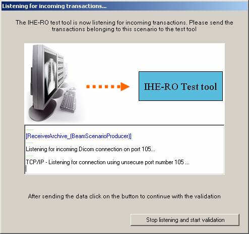

Instruction for use test scenarios
This document
describes how to run test scenarios using the DVTk based IHE-RO 2013 TestTool.
Start the IHE-RO test
tool by clicking the TestScenario-IHE-RO-2013” shortcut.
Configuration
First the testtool
needs to be configured, starting with the connection details. The actor under
test network settings need to be configured.
Select the ‘Session
Information’ tab and configure the actor under test AE title, ip-address and
port number.
Make sure that the IHE
test tool AE title and port is correctly configured at the actor side as well.

Supported transfersyntaxes
1.2.840.10008.1.2.1 - Explicit VR Little
Endian
1.2.840.10008.1.2 - Implicit VR Little
Endian: Default Transfer Syntax for DICOM
1.2.840.10008.1.2.2 - Explicit VR Big
Endian
Important:
For the SOP Classes RT Plan Storage (1.2.840.10008.5.1.4.1.1.481.5)
and RT Dose Storage(1.2.840.10008.5.1.4.1.1.481.2) only the Implicit VR Little
Endian transfersyntax is supported.
Running a scenario
The test scenario will start running by double clicking on the test
scenario name in the left pane (e.g. double click on the text
“2013BasicStaticBeamProducer.vbs”)
Example: Basic Static Beam
Producer Scenario.
Start the scenario by double clicking on the text
“2013BasicStaticBeamProducer.vbs” in the left pane. The following pop-up will
be displayed.
Press Yes or No whether or not you want to receive a structured set, CT
set and RT plan on the SUT (System Under Test)

In either case the following Pop-up are shown by the test tools:

After sending it will wait for incoming transactions form the actor
under test. While the test tool is listening a dialog will be shown as can be
seen above. In the logging window the incoming and outgoing DICOM messages are
shown.
The dialog can be closed by clicking the ‘Stop listening and start
validation’ button. All received scenario transactions are validated against
the IHE-RO 2013 objects profile requirements.
The results will be shown in the test tools main window.
Test Results
The result files of
all tested scenarios are located at “<Instalation dir>\2013 TestTools\RT
Advanced Objects\TestScenarios\ResultFiles”.